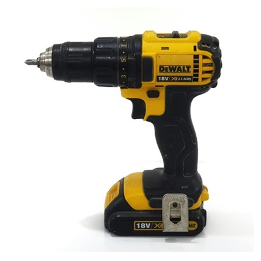

Part 3: Increase Productivity
Written by: Joshua J. Lavallais
Everyone is wired differently. So, everyone will move and operate at different speeds.
Still, as you set a goal, determine the resources to complete your objective, and work hard, you will gain momentum and excel.
As mentioned in Part 2, clarity yields the drive to complete missions.
Yet, despite having a clear path to your treasure chest and using the Pareto Principle, you must do the work. Consequently, a byproduct of work is fatigue.
How you manage fatigue is subjective, but there are two engaging schools of thought on this matter.
First, the humorous, wise, and always delightful Arianna Huffington will favor a healthy work-life balance:
work hard but get a minimum of seven hours of sleep each night.
Second, there are public figures such as Dr. Eric Thomas and Gary Vaynerchuk who will advise you to work your butt off,
and if you have a morsel of energy left, try to work your face off, bottom line, no matter what.
I have adopted the philosophies of Huffington, Thomas, and Vaynerchuk while adding my custom spices to the mix.
In turn, I built a system that works best for me. For instance, I work hard, but in 2-hour blocks, with a 1-hour break in between.
Typically, the duration of my 2-hours on, 1-hour off routine is contingent on my timetable for a
given project and the levels of energy I have at that time.
As you work to accomplish goals and you are tracking your time, you should:
1. Look for patterns in your work regimen.
2. Track your progress.
While seeking patterns, if you recognize that you accomplish more in 4-hour blocks with 30 minutes in between, consider this as a possible work regimen.
Also, check for peak hours of productivity. For example, most writers produce their best material in
the morning, as the mind is fresh and ready to go. What if you do your best work in the middle of the day?
If so, consider the Pareto Principle—organize your most important task in the middle of the day to achieve maximum results.
As you track your progress, if you notice that your working hours have waned, think back to what was going on during that stretch of diminishing output.
Netflix? Texting? Daydreaming? Whatever the reason(s), seek to eliminate them—and fast.
If not, you can easily fall back into the habit of spending zero time on your goal,
which will inhibit the progress you’ve already made and ultimately bring all acquired momentum to a quiet-subtle halt.
Whether you choose to work like Arianna, Eric, Gary, or myself is your choice. Ultimately, you must customize your work method based on your
calculated timetable for completion and your mind and body’s threshold for labor.
UTILIZE A TIME MANAGEMENT TOOL TO INCREASE PRODUCTIVITY
In addition to all that I have mentioned, from conducting time inventory to seeking ways to increase efficiency, there is another
valuable resource to consider: time management tools. Scoro, Replicon, and TimeCamp are among the many tools to help increase efficiency.
Are you not tech-savvy? Old skool? Both? If you answer yes to either one or both questions, do not forget the value of pen and paper as in a list.
That’s right, a list.
Think of everything you need to accomplish and jot it down on a list. When you complete a task, scratch it off the list.
Using a list will help you see all that is outstanding while keeping track of unresolved tasks.
Recall my method for tracking my progress during graduate school; I used a list. Furthermore, the use of a time management tool is closely related to planning,
which is crucial for effective time management.
OK, but why is planning crucial for effective time management? I will tell you why.
Imagine you are working on a goal made up of 25 different sub-goals. Instead of using a list, you work on tasks as they come.
You overlook the Pareto principle and, by default, operate haphazardly. Working in this manner is a setup for failure —or — if you did manage
to produce something of substance, you likely would have spent more time than needed to accomplish your goal.
···
We know that planning is a key ingredient to being organized and optimizing efficiency. Yet, planning lends flavor to another area of life.
According to a Charles Schwab study
on Pressroom.com, three in five Americans live paycheck to paycheck,
and only one in four have a written financial plan. The article suggested that planners are more likely to have a
higher overall Modern Wealth Index score, be regular savers, and effectively manage their debt.
Just another reason why planning matters.
IN CONCLUSION: JUST GET IT DONE!
From labor to reward, it feels amazing to scratch an item off the list.
As you complete each task, you will lessen the gap between yourself and your goal.
What if you do not have a goal? Still, you can apply the strategies mentioned in this series to become more efficient,
thereby increasing your productivity at work, in your personal life, or in both areas.
Remember that life is short and long.
Even if you intend to walk towards the bronze or no medal, you will still be in the arena of present and future champions — so — why not compete?
As a participant on the track of life, why not run towards the Gold medal and aim high? Spend your
time wisely and learn new skills. Take on the project you’ve been putting off.
Or better yet, get serious about your business endeavors. With every goal met,
you inch closer to greatness and feel empowered to set the bar higher for all subsequent aspirations.
As a final challenge, I want you to audit your time for one week.
Calculate your disposable time and see how you spend your hours and minutes.
Think back to the goal you jotted down. Determine how you can be efficient and still finish without overusing or wasting resources.
Everyone is wired differently. So, everyone will move and operate at different speeds. Still, as you set a goal, determine the resources to complete your objective, and work hard, you will gain momentum and excel. As mentioned in Part 2, clarity yields the drive to complete missions. Yet, despite having a clear path to your treasure chest and using the Pareto Principle, you must do the work. Consequently, a byproduct of work is fatigue.
How you manage fatigue is subjective, but there are two engaging schools of thought on this matter.
First, the humorous, wise, and always delightful Arianna Huffington will favor a healthy work-life balance: work hard but get a minimum of seven hours of sleep each night.
Second, there are public figures such as Dr. Eric Thomas and Gary Vaynerchuk who will advise you to work your butt off, and if you have a morsel of energy left, try to work your face off, bottom line, no matter what.
I have adopted the philosophies of Huffington, Thomas, and Vaynerchuk while adding my custom spices to the mix. In turn, I built a system that works best for me. For instance, I work hard, but in 2-hour blocks, with a 1-hour break in between. Typically, the duration of my 2-hours on, 1-hour off routine is contingent on my timetable for a given project and the levels of energy I have at that time.
As you work to accomplish goals and you are tracking your time, you should:
1. Look for patterns in your work regimen.
2. Track your progress.
While seeking patterns, if you recognize that you accomplish more in 4-hour blocks with 30 minutes in between, consider this as a possible work regimen. Also, check for peak hours of productivity. For example, most writers produce their best material in the morning, as the mind is fresh and ready to go. What if you do your best work in the middle of the day? If so, consider the Pareto Principle—organize your most important task in the middle of the day to achieve maximum results.
As you track your progress, if you notice that your working hours have waned, think back to what was going on during that stretch of diminishing output. Netflix? Texting? Daydreaming? Whatever the reason(s), seek to eliminate them—and fast. If not, you can easily fall back into the habit of spending zero time on your goal, which will inhibit the progress you’ve already made and ultimately bring all acquired momentum to a quiet-subtle halt.
Whether you choose to work like Arianna, Eric, Gary, or myself is your choice. Ultimately, you must customize your work method based on your calculated timetable for completion and your mind and body’s threshold for labor.
UTILIZE A TIME MANAGEMENT TOOL TO INCREASE PRODUCTIVITY
In addition to all that I have mentioned, from conducting time inventory to seeking ways to increase efficiency, there is another valuable resource to consider: time management tools. Scoro, Replicon, and TimeCamp are among the many tools to help increase efficiency. Are you not tech-savvy? Old skool? Both? If you answer yes to either one or both questions, do not forget the value of pen and paper as in a list. That’s right, a list.
Think of everything you need to accomplish and jot it down on a list. When you complete a task, scratch it off the list. Using a list will help you see all that is outstanding while keeping track of unresolved tasks. Recall my method for tracking my progress during graduate school; I used a list. Furthermore, the use of a time management tool is closely related to planning, which is crucial for effective time management.
OK, but why is planning crucial for effective time management? I will tell you why.
Imagine you are working on a goal made up of 25 different sub-goals. Instead of using a list, you work on tasks as they come. You overlook the Pareto principle and, by default, operate haphazardly. Working in this manner is a setup for failure —or — if you did manage to produce something of substance, you likely would have spent more time than needed to accomplish your goal.
···
We know that planning is a key ingredient to being organized and optimizing efficiency. Yet, planning lends flavor to another area of life. According to a Charles Schwab study on Pressroom.com, three in five Americans live paycheck to paycheck, and only one in four have a written financial plan. The article suggested that planners are more likely to have a higher overall Modern Wealth Index score, be regular savers, and effectively manage their debt.
Just another reason why planning matters.
IN CONCLUSION: JUST GET IT DONE!
From labor to reward, it feels amazing to scratch an item off the list. As you complete each task, you will lessen the gap between yourself and your goal. What if you do not have a goal? Still, you can apply the strategies mentioned in this series to become more efficient, thereby increasing your productivity at work, in your personal life, or in both areas.
Remember that life is short and long. Even if you intend to walk towards the bronze or no medal, you will still be in the arena of present and future champions — so — why not compete? As a participant on the track of life, why not run towards the Gold medal and aim high? Spend your time wisely and learn new skills. Take on the project you’ve been putting off. Or better yet, get serious about your business endeavors. With every goal met, you inch closer to greatness and feel empowered to set the bar higher for all subsequent aspirations.
As a final challenge, I want you to audit your time for one week. Calculate your disposable time and see how you spend your hours and minutes. Think back to the goal you jotted down. Determine how you can be efficient and still finish without overusing or wasting resources.
Thanks for reading!
Joshua J. Lavallais
About Me
And then some.
-

Joshua Lavallais, MBA
My name is Joshua Lavallais. I am a creative spirit, and I have and always will love art. For me, web design is “digital art.” I work primarily with HTML, CSS, Flexbox, and CSS Grid. I specialize in creating web pages that are mobile responsive and user-friendly while using the best typography and color schematic. Like everyone else, I have a story. My web designer journey is as follows...
-
Some time ago in the year 2018, it all started with WordPress
For years I have loved writing, and I have had opportunities in my current role to showcase my skills as a writer. Beyond the occasional writing assignments at work, I wanted to build a platform to feature my work on topics of personal interest, such as business and psychology. To share my work on said topics, I launched a blog website using the world-renowned content management system WordPress. With help and guidance from experts, I learned how to build custom web pages using built-in tools, particularly WP Bakery. I quickly realized that I loved designing and building web pages, such that I could do so for hours. Case in point, I would sit for hours on the weekends, building my website, page by page, while often ignoring the hunger pangs in my stomach, as I was too engaged to step away to eat. I never imagined I could learn to build web pages from scratch. But then, that all changed.
-

Summer of 2020 - from blogging to designing and building my own custom web pages
As I continued writing content for my blog, someone introduced me to a YouTube course that covered the basics of web design - it was exciting! I quickly realized I loved designing and building web pages “using code.” Upon finishing the course, I felt the need to learn more, but from whom or where? Subsequently, I took my time researching different boot camps and programs. I wanted to do what was best for me. And then...
-

January 2022
Enter CodeCademy
At the recommendation of a seasoned web designer, I enrolled in classes provided by Codecademy. Since then, I have learned many skills. Also, I have learned from outside sources such as W3 Schools, MDN, and Stack Overflow. Some people may view any continuous learning cycle as a “tedious endeavor,” but in life, each of us must strive to learn and commit to the role of “lifelong student” in the game of life. Learning and acquiring knowledge are eternal. My overall goal is to learn and become better at my craft while delivering a product deemed satisfactory by all clients.
-